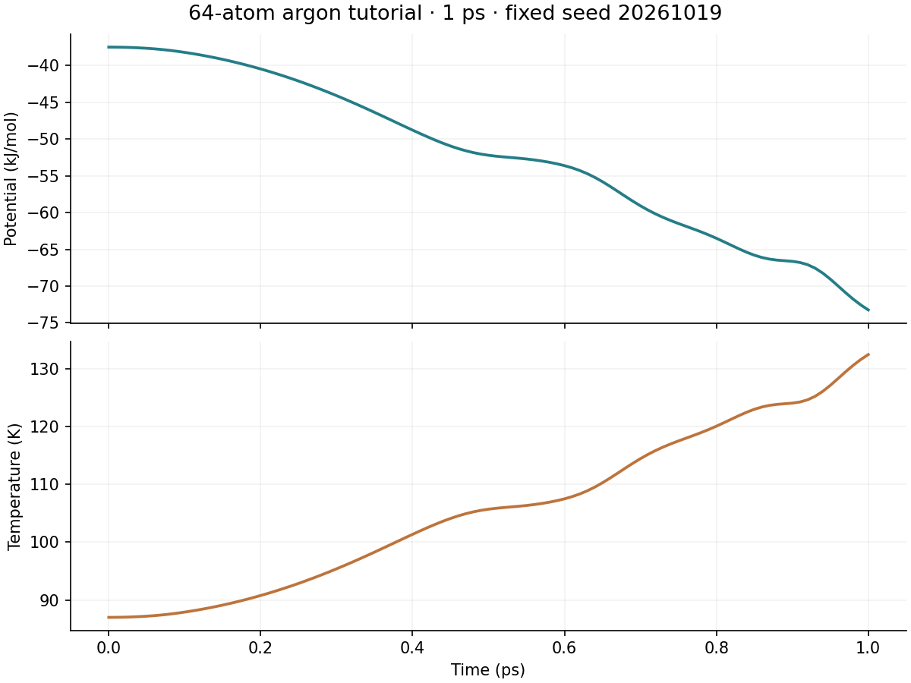

{
"workflow": "tutorial",
"ntmpi": 1,
"ntomp": 1,
"gpu": false,
"duration_ps": 1,
"seed": 20261019
}
[
{
"path": "example.mdp",
"size": 377,
"sha256": "518762db5d3c9dfd87cfe95036aa73bfc97114744b360342f17f7c39ffcc45d3"
},
{
"path": "example.top",
"size": 180,
"sha256": "71458155b68ffb11ca4292c1200cb714d8a8c24976a3043d8c469e20c090c1e5"
},
{
"path": "initial.gro",
"size": 2936,
"sha256": "b291a48f18e4868aad103ac0347df1410464d1b9105f1260ad9bc3a7f558ab24"
}
]
| example-energy.png | 75,546 B |
| example-energy.xvg | 4,007 B |
| example.mdp | 377 B |
| experiment-manifest.json | 3,031 B |
| quality-tutorial.txt | 43 B |